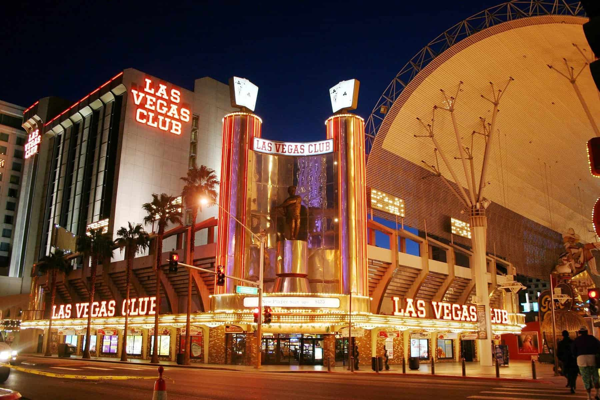
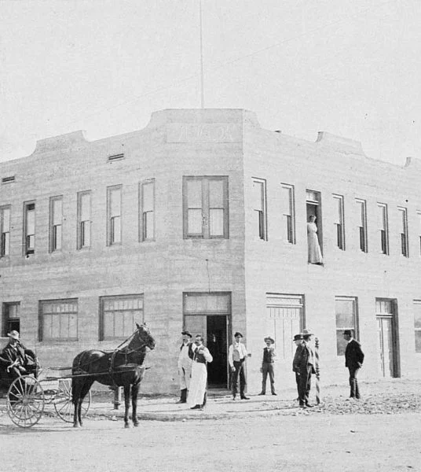

INTRODUCTION
LAS VEGAS , A Railroad Town
Las Vegas was first founded in May 1905, when 110 acres of land was sold by the Los Angeles and Salt Lake railroad company.
It only took a year for the very first casino to open, Golden Gate, a hotel-casino which was located at 1 Fremont Street.

Back in these early days you could get both room and board for a single dollar.
Las Vegas, which was still just a railroad town at this time, voted to become incorporated on June 1, 1911.
For 20 years Las Vegas remained a relatively quiet place. But then, in 1931, two things kickstarted its transformation into the busy city we all know today.
First among these were changes to the area’s divorce laws. This meant that anyone who had been a resident of Las Vegas for six weeks could file for divorce, which led to many “divorce tourists” visiting the city.
1931 also saw the construction of the Hoover Dam beginning just east of Las Vegas.
This attracted thousands of workers to the city and led to casinos and other entertainment venues opening along the length of Fremont Street.